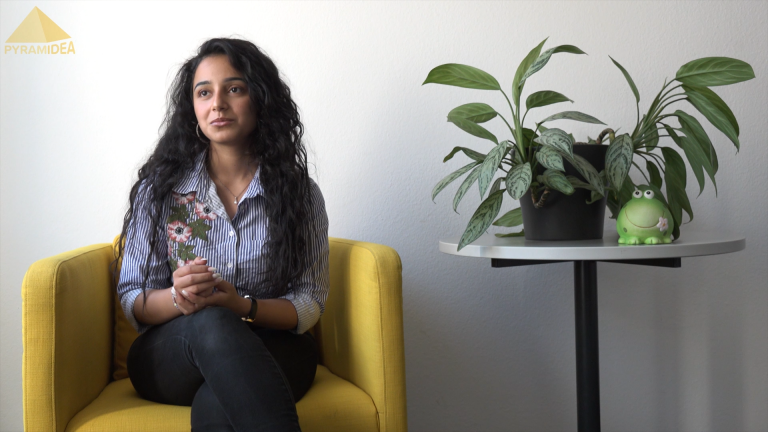
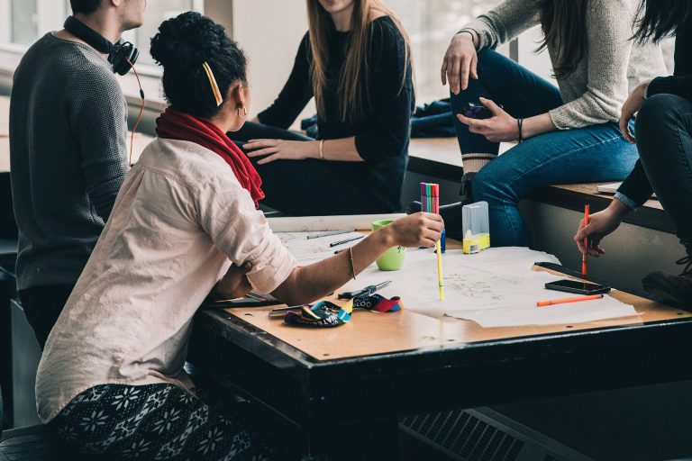

Projekte
-

Детская группа "В мире сказок"
Будет проводиться 3 раза в неделю по 2 часа. В небольших группах до 10 человек будут читаться немецкие сказки и детские книжки, также ставиться спектакли по мотивам. Также дети будут рисовать персонажей и посещать музеи. Помимо этого будут знакомиться с основными праздниками в Германии.
-
Клуб для пенсионеров 55+ "Borsch"
мужчины и женшины в самом расцвете лет могут собираться 2 раща в неделю, чтобы совместно что-то приготовить, пообщаться на разные темы и поиграть в настольные игры. Конечно завести новые знакомства и не сидеть в 4х стенах.
-

Консультации по заполнению документов
2 Раза в неделю по индивидуальным терминам с нашей самой самой Катей❤️ Поставить антраг на квартиру, подать заявление в джобцентр или миграционную службу - она ни раз уже всем помогала, но теперь это будет "упорядоченный вариант")
-
Женская группа психологической помощи
где вы сможете 2 раза в неднлю получить профессиональную помощь или просто поддержку от психолога в это нелегкое для многих время.
-
Повседневный немецкий
2 раза в неделю по 2 часа будет в небольших группах до 13-15 человек отрабатываться повседневный немецкий в диалогах. Чтобы САМОМУ поставить термин и сходить к врачу, поговорить с учителем в школе или не расстеряться в магазине и других общественных местах)
-
Законы Германии или как выжить в демократическом государстве
2 раза в неделю по 2 часа будет разъясняться законодательная база Германии, демократические ценности, а также тест для гражданства и прочие правовые моменты.